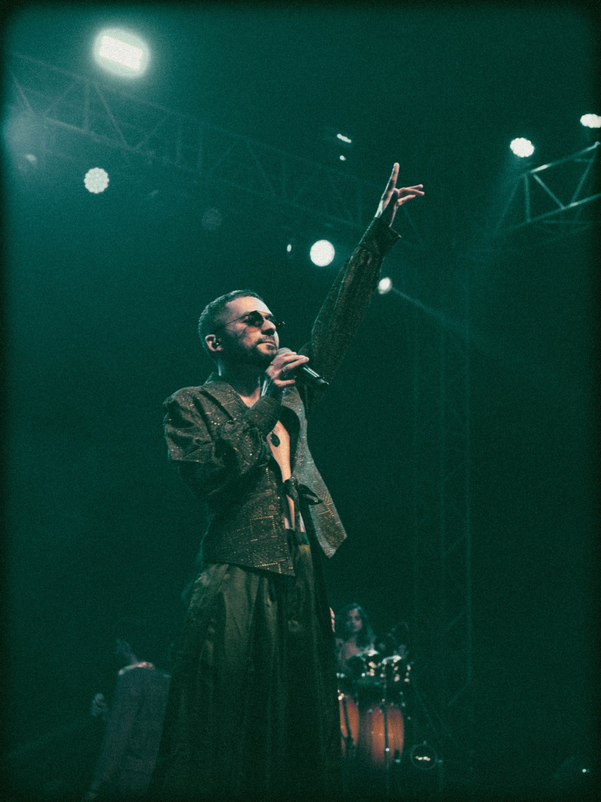

The Eye Behind the Lens
Ravish Rajiv Bramhe
Commercial & Editorial Photographer — Varanasi, India
The Eye Behind the Lens
Commercial & Editorial Photographer — Varanasi, India
Based in Varanasi, India, I am a commercial and editorial photographer with over 4 years of experience working across fashion, events, medical, interior, and product photography. My work is rooted in the rich visual culture of one of the world's oldest cities — a place that has sharpened my eye for light, detail, and the decisive moment.
I believe every image should do one thing well — communicate. Whether I am photographing a fashion campaign, documenting a medical conference, or capturing the quiet elegance of an interior space, I bring the same discipline and attention to every frame. My approach is clean, considered, and always image-first.
Over the past four years I have had the privilege of working with leading organisations and brands including the Institute of Medical Sciences (IMS) BHU, Vandana Fashion, Humans of Varanasi, IndianShelf, and Klothing Yards — delivering imagery that serves their brands with clarity and purpose.
Every image begins with observation. I believe the best photographs happen when preparation meets the unrepeatable — and I build every project around that philosophy.
Fashion, Events, Medical Conferences, Medical Shoots, Interior & Product Photography.
Varanasi, Uttar Pradesh, India.
Available for travel nationwide.
What I Offer
Campaign shoots, lookbooks, and editorial spreads for fashion brands and designers.
Corporate events, medical conferences, galas, and institutional occasions.
Clinical and medical photography for hospitals, institutions, and publications.
Residential and commercial interiors for architects, designers, and developers.
E-commerce, catalogue, and hero product photography for brands and retailers.
Authentic lifestyle and portrait photography for brands and personal projects.
Trusted By
Thoughts & Stories
Fashion photography is not about having the most expensive camera or the biggest studio. It is about understanding your subject, reading light, and making your model feel at ease in front of the lens.
Read More →A great product photograph does not just show what something looks like — it makes the viewer want to own it. Here is what I have learned from shooting for brands like IndianShelf and Klothing Yards.
Read More →Events move fast. People move faster. After shooting conferences and galas for institutions like IMS BHU, I have developed a system that means I never miss the moments that matter.
Read More →Varanasi does not give you easy photographs. It gives you real ones. Living and working here has taught me things about light, patience, and humanity that no photography course ever could.
Read More →I arrived at the ghats at 4:47 AM. The city was still sleeping, the Ganga was still, and the only sound was the distant bell of a temple. What happened in the next twenty minutes changed how I see photography.
Read More →It was our third location change in two hours. The light was wrong, the wind was stronger than expected, and the model had never worked in front of a camera before. Then everything clicked.
Read More →.jpg)
Fashion photography is not about having the most expensive camera or the biggest studio. It is about understanding your subject, reading the light, and making your model feel so comfortable that they forget the camera exists entirely.
After four years of shooting fashion in Varanasi — from small local designers to established brands — here are five things I wish someone had told me at the beginning.
Before I raise my camera, I spend five minutes studying the light in the location. Where is it coming from? Is it harsh or soft? Is there a reflective surface nearby I can use? Natural light, especially in the early morning or the golden hour just before sunset, is almost always more flattering than artificial light. In Varanasi, the morning light near the ghats has a warmth I have never found anywhere else — and I use it as often as I can.
Most people freeze in front of a camera. It is your job as the photographer to break that tension. Talk to your model constantly. Give them small, specific directions — "tilt your chin just slightly down," "look past my shoulder," "take one step forward and pause." The moment they stop thinking about the camera is the moment you get your best shot.
"The best fashion photograph is the one where you forget you are looking at a photograph."
On a fashion shoot I typically take three to four times more frames than I expect to use. This is not because I am being careless — it is because the perfect expression, the perfect movement, and the perfect light rarely all align at the same moment. Give yourself options in post.
A brilliant subject in front of a cluttered background is a wasted shot. Before every frame, quickly scan the edges of your viewfinder. Remove distractions, simplify the frame, and let your subject breathe.
Chimping (checking your screen after every shot) kills momentum on a fashion shoot. Shoot your set, keep your energy up, and review when the session is done. You will see your work more clearly with fresh eyes — and your model will thank you for not making them wait every thirty seconds.
Fashion photography is a skill you build one shoot at a time. Be patient with yourself, stay curious, and never stop learning from every image you make.

A great product photograph does not just show what something looks like — it makes the viewer want to own it. There is a significant difference between a product image that records an object and one that sells it. After shooting for brands like IndianShelf and Klothing Yards, here is what I have learned.
Every product has a personality. A handcrafted wooden shelf says warmth, craftsmanship, and home. A fashion garment says aspiration, identity, and style. Before I set up a single light or touch my camera, I ask: what does this product want to communicate? The answer shapes everything — the background, the lighting, the angle, and the mood.
The most common mistake in product photography is visual noise. Too many props, too busy a background, too much going on around the product itself. My rule is simple — if it does not serve the product, it does not belong in the frame. A clean white background, a textured surface, or a single carefully chosen prop is almost always enough.
"Simplicity is not laziness. It is the hardest discipline in product photography."
Good product lighting reveals texture. A single diffused light source coming from a 45-degree angle will show the grain of wood, the weave of fabric, or the finish of metal far better than flat, even lighting ever will. I shoot most of my product work with one key light and a reflector — nothing more.
E-commerce clients need front, side, back, detail, and lifestyle shots at minimum. I always deliver a full set rather than a single hero image. This gives the brand flexibility and gives the customer confidence.
A product in context — a bookshelf styled with books, a garment on a real person in a real setting — consistently outperforms plain product shots in terms of customer engagement. I always include at least one lifestyle image in every product shoot. It is the image that answers the question the customer is really asking: "What will this look like in my life?"
Product photography is a quiet, precise discipline. Get it right and the product sells itself. Get it wrong and even the best product looks ordinary.

Events move fast. People move faster. A keynote speaker pauses for exactly the right expression for half a second. Two colleagues share a genuine laugh across a crowded room. A dignitary shakes hands and the moment is gone before most photographers have raised their camera. After shooting large-scale conferences and events for institutions like IMS BHU, I have developed a system that ensures I never miss the moments that matter.
I always arrive at least one hour before any event begins. I walk every room, note where the light falls, identify the key moments likely to happen (the welcome address, the award ceremony, the networking break), and position myself accordingly. This preparation is invisible in the final images — but it is the reason those images exist.
I ask the organiser for a full schedule before every event. I highlight the five or six moments that are non-negotiable — the moments the client will judge the entire shoot by. Everything else I capture as a bonus. Know what matters most, and be ready for it.
"In event photography, anticipation is worth more than reaction speed."
I use continuous shooting for applause moments, award handovers, and any movement — but I am always looking for the single decisive frame rather than hoping one appears in a burst. Knowing when to press the shutter is more valuable than how fast your camera can shoot.
The best event photographs are often not the headline moments. They are the speaker backstage collecting their thoughts, the delegate reading their notes before a panel, the organiser exhaling with relief at the end of a successful day. These images tell the full story of an event — not just the highlights.
Event clients often need images the same day or the next morning for social media and press. I have a fast culling and editing workflow that allows me to deliver a first selection within hours of an event ending. Speed, combined with quality, is what brings clients back.
Event photography is a skill of presence — being in the right place, at the right moment, with the right mindset. There are no second takes. That is what makes it one of the most demanding and most rewarding disciplines in photography.

Varanasi does not give you easy photographs. It gives you real ones. Living and working here has taught me things about light, patience, and humanity that no photography course ever could.
People often ask me what it is like to be a professional photographer in Varanasi. My honest answer is that it is one of the greatest privileges I can imagine — and one of the most demanding environments I have ever worked in.
When I first picked up a camera seriously, I tried to photograph Varanasi the way I had seen it photographed in magazines and on Instagram — the burning ghats at dusk, the sadhus in orange, the boats on the Ganga at sunrise. Those images exist and they are beautiful. But they are not mine. It took me almost a year of shooting here before I stopped looking for the famous frame and started looking for the true one.
The true Varanasi is in the chai stall at 6 AM where the same five men have sat every morning for twenty years. It is in the tailor on Vishwanath Gali who sews without looking up. It is in the medical student cycling through the lanes of BHU at dusk, textbook balanced on the handlebars. These are the frames I look for now.
"Varanasi rewards the patient eye. Rush it and you get a postcard. Wait and you get the truth."
The morning light in Varanasi, particularly near the river between October and February, has a quality I have never encountered elsewhere. It is warm, diffused, and somehow ancient — as though the light itself carries the memory of every morning it has illuminated this city for the past three thousand years. I plan most of my personal projects around it.
Building a commercial photography practice in Varanasi has required patience and trust-building in equal measure. Many clients here were initially hesitant about professional photography — it felt like an unnecessary expense when a phone photograph would do. Showing them the difference, image by image and project by project, has been the most rewarding part of my career so far.
Today I work with brands and institutions across the city and beyond. But Varanasi itself remains my most important client. It keeps teaching me — about stillness, about observation, about the fact that the best photograph is always the next one.

I arrived at the ghats at 4:47 AM. The city was still sleeping. The Ganga was still. The only sound was the distant bell of a temple somewhere up the lane, and the quiet lapping of water against the stone steps below me.
I had not planned to shoot that morning. I had my camera with me — I almost always do — but I had come to the ghat for the same reason I often do before a busy shoot day: to be quiet, and to think.
At around 5:15, an elderly man descended the steps near where I was sitting. He moved slowly, deliberately, the way people move when they have performed the same action ten thousand times and see no reason to hurry it. He reached the water, cupped it in both hands, and held it toward the first grey light appearing over the river.
I raised my camera. I did not adjust my settings. I pressed the shutter once.
That single frame — underexposed by half a stop, slightly soft at the edges, with a boat barely visible in the background — became one of the images I am most proud of in four years of photography. Not because it is technically perfect. Because it is completely true.
"The photographs I planned taught me technique. The photographs I did not plan taught me photography."
I went back to the same ghat the following three mornings with my tripod, my filters, and my settings dialled in perfectly. I took hundreds of frames. None of them came close to that single accidental shot from the morning I was just sitting and thinking.
There is a lesson in that which I return to constantly. Preparation matters. Technical skill matters. But presence — being fully awake and attentive in the moment you are in — matters more than all of it combined.
The ghat at dawn is still there. I still go. And I still bring my camera, just in case.
.jpg)
It was our third location change in two hours. The light was wrong at the first spot — a construction crane had appeared overnight directly behind our planned background. The second location was perfect until a wedding procession arrived, filling the lane with music, colour, and very cheerfully immovable people. By the time we reached the third spot, the model — shooting her first professional job — was visibly nervous, and I was quietly recalculating how much daylight we had left.
Then everything clicked.
The third location was not on my original list. It was a narrow lane I had noticed while we were driving between locations — the kind of place you only see when you are paying attention even when you are stressed. Old plaster walls the colour of turmeric. A single wooden door painted deep blue. Morning light angling in from the east at exactly the angle I needed.
I asked the driver to stop. We had twenty minutes of good light left. I set up in four minutes, spoke to the model for another five — not about photography, just about her, about Varanasi, about what she had eaten for breakfast — and then we shot.
"The best location is not always the one you planned. Sometimes it is the one the day gives you."
There is a moment in almost every shoot — if you create the right conditions — when the subject stops being aware of the camera. For this model, it happened about twelve minutes in. She was mid-sentence, laughing at something I had said, completely unselfconscious, standing in that golden lane in front of that blue door. I pressed the shutter. That is the hero image of the entire campaign.
When I delivered the images the following evening, the client at Vandana Fashion was quiet for a long moment after opening the first photograph. Then she said: "This looks like her, but better. How did you do that?" I told her the truth — I did not do anything. I just waited for her model to be herself, and then I photographed that.
That is the whole job, really. Create the conditions for something real to happen, and be ready when it does.